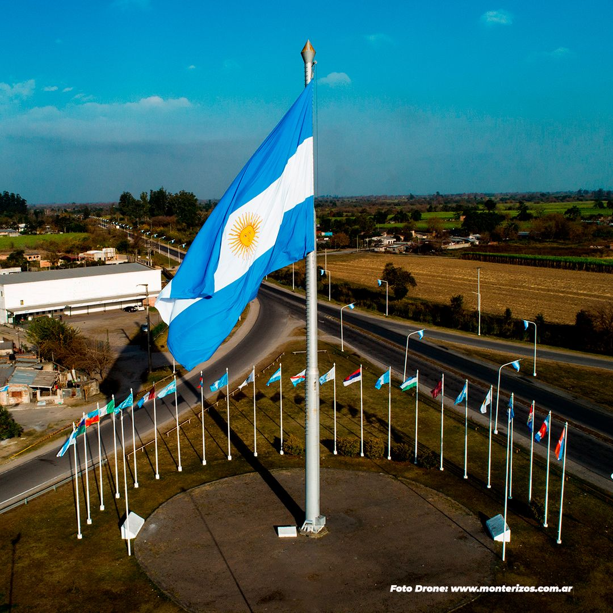

Lugares para visitar
Conocé algunos de los lugares y espacios representativos de Monteros, Tucumán.

Monumento a la Bandera
En el acceso este de Monteros, sobre la Ruta Provincial 325, se encuentra el Monumento a la Bandera, un espacio que forma parte de las celebraciones patrias de la ciudad.
Cada 20 de junio, Día de la Bandera, este lugar se convierte en escenario de una ceremonia muy especial para la comunidad.
En este espacio, los alumnos de 4.º grado de las escuelas primarias de Monteros realizan el tradicional Juramento a la Bandera, acompañados por sus docentes, familias y la comunidad.
Esta ceremonia constituye un momento significativo para los estudiantes y permite mantener viva, año tras año, una tradición vinculada con nuestra identidad y con el legado de Manuel Belgrano.
El Monumento a la Bandera forma parte así de los espacios de Monteros que reúnen historia, educación, identidad y tradición.

Avenida de acceso a Monteros
Uno de los primeros lugares que permite conocer la ciudad es su avenida principal de acceso.
Este espacio forma parte del paisaje urbano de Monteros y constituye una de las vías de ingreso a la ciudad.
Ver ubicación
Mástil de calle 25 de Mayo: un punto de encuentro en la ciudad
El mástil se encuentra ubicado sobre calle 25 de Mayo y forma parte de uno de los sectores más transitados y concurridos de Monteros.
A su izquierda se encuentra la Terminal de Ómnibus de la ciudad, un espacio por donde ingresan y parten colectivos urbanos, interurbanos y de larga distancia, conectando a Monteros con distintas localidades y ciudades.
Junto a la terminal también se encuentra el CIC de Mínima, un espacio destinado a la atención y acompañamiento de la comunidad, donde se brindan servicios de asistencia médica y profesionales como psicología, fonoaudiología y nutrición.
Otro espacio cercano es el Paseo de la Lectura, un lugar recreativo y de encuentro donde niños, jóvenes y adultos pueden participar de distintas jornadas y actividades, compartir y disfrutar de momentos en comunidad.
Hacia la derecha del mástil se encuentra el Parque 28 de Agosto, un espacio pensado para disfrutar al aire libre, con juegos para los más pequeños y lugares donde las familias pueden reunirse, descansar y compartir unos mates.
Por su ubicación, el mástil se convierte así en un punto desde el cual se pueden descubrir diferentes espacios que forman parte de la vida cotidiana y comunitaria de Monteros.
Ver ubicación
Iglesia Nuestra Señora del Rosario
La Iglesia Nuestra Señora del Rosario es uno de los edificios históricos más destacados de Monteros.
El templo se encuentra frente a la Plaza Bernabé Aráoz y forma parte del patrimonio cultural y religioso de la ciudad.
Ver ubicación
Virgen del Rosario: fe y tradición monteriza
La Virgen del Rosario es la Patrona de nuestra querida ciudad de Monteros y ocupa un lugar muy especial en la vida religiosa y cultural de la comunidad.
Cada año, el primer domingo de octubre, la ciudad celebra sus Fiestas Patronales en su honor. Es una celebración que reúne a familias y vecinos en un momento de fe, encuentro y tradición.
En las semanas previas a la Fiesta Patronal, muchos niños viven un momento muy especial al recibir su Primera Comunión en la Iglesia Nuestra Señora del Rosario. Durante la celebración de octubre, esos mismos niños acompañan a la Virgen del Rosario en su tradicional procesión, sumándose a una tradición que se transmite de generación en generación.
La procesión parte desde la Iglesia Nuestra Señora del Rosario y recorre distintas calles de la ciudad, pasando por calle Rivadavia, avenida Roca y calle 24 de Septiembre hasta llegar a calle Lamadrid. Luego continúa alrededor de la plaza para finalmente regresar a la iglesia.
Más que una celebración religiosa, esta fiesta representa una tradición muy arraigada que reúne a distintas generaciones y forma parte de la identidad de Monteros.
Conocer la Iglesia
Plaza Bernabé Aráoz: el corazón de Monteros
La Plaza Bernabé Aráoz es uno de los espacios más representativos de Monteros y se encuentra ubicada en el centro de la ciudad. Es un lugar de encuentro para vecinos y visitantes y forma parte del paisaje cotidiano de la comunidad.
Rodeada por calles céntricas, la plaza invita a recorrer sus espacios, descansar y disfrutar de un momento al aire libre. A lo largo del año también se convierte en escenario de diferentes actividades, encuentros y celebraciones que reúnen a la comunidad.
Frente a la plaza se encuentra la Iglesia Nuestra Señora del Rosario, uno de los edificios históricos y religiosos más importantes de Monteros. Esta cercanía entre la plaza y la iglesia forma parte de una imagen característica del centro de la ciudad.
La plaza también permite acercarse a otros espacios y lugares de interés del centro monterizo, convirtiéndose en un punto de partida ideal para comenzar a recorrer y conocer la ciudad.
Más que una plaza, la Bernabé Aráoz es un espacio que forma parte de la historia, las tradiciones y la vida cotidiana de Monteros.
Ver ubicación ```